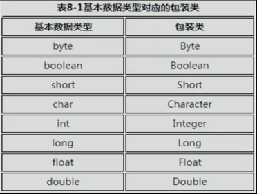

包装类
将基本数据类型转化为对象。


//基本类型转化为Integer对象
Integer int1=new Integer(10);
Integer int2=Integer.valueOf(20);//推荐写法
//Integer对象转化int
int a= int1.intValue();
//字符串转化为Integer对象
Integer int3=Integer.parseInt("335");
Integer int4=new Integer("123");
//Integer转字符串
String str1=in3.toString();
//Integer的常量
Integer.MAX_VALUE == 2147483647
自动装箱和拆箱
装箱：
Integer a=234;
Integer i = Integer.valueOf(100);//编译器自动装箱
拆箱
int b=a;
int b=a.intValue();//编译器自动拆箱
缓存
缓存 [-128 , 127]范围内的数字

为-128到127间的数字都生成Integer对象，存在cache中。使用时，先判断数字范围，若在此范围内，直接从cache中获取对象即可。


String类

String底层存储是 final char[]。 不可变。
StringBuffer可变字符序列
线程安全，效率低。
StringBuilder 可变字符序列
线程不安全，效率高。（一般用它）
StringBuilder sb=new StringBuilder("asdfasdf");
sb.setCharAt(2,"M"); //修改字符串内容
StringBuilder sb = new StringBuilder();
for(int i=0 ; i<26; ++i)
{
sb.append((char)('a'+i));//扩展
}
sb.reverse() ; //逆序
sb.insert(0,'I').insert(6,"am");//插入, return this, 所以可以连续调用
sb.delete(20,23); //返回的也是this
陷阱
循环累加字符串时：
错误用法：
String str="";
for(int i=0;i<5000;i++)
{
str=str+i; //产生了10000个对象。
}
正确用法：
StringBuilder sb1= new StringBuilder("");
for(int i=0;i<5000;i++)
{
sb1.append(i);
}
Date
Date类用来处理时间。
1970年1月1日00：00:00为基准时间。
Date d=new Date(2000);
Date d2=new Date();
System.out.println(d2.after(d));
处理日期使用Canlendar 日期类。
DateFormat类和SimpleDateFormat类
DateFormat是一个抽象类，一般使用他的子类SimpleDateFormat类实现。

DateFormat df=new SimpleDateFormat("yyyy-MM-dd hh:mm:ss");
//(ctrl + shift + o 自动导入包）
///把时间对象转成日期字符串（按照给定格式）
String str = df.format(new Date(4000000));// 1970-01-01 09:06:40
//把字符串转成时间对象
DateFormat df2=new SimpleDateFormat("yyyy年MM月dd日 hh:mm:ss");
Date date=df2.parse("1982年5月10日 10:49:59"); //解析日期
Calendar日历类
Calendar类是一个抽象类，一般使用他的子类GregorianCalendar类。
获取日期相关元素
Calendar calendar = new GregorianCalendar();
int year = calendar.get(Calendar.YEAR); //返回年份
int month = calendar.get(Calendar.MONTH);//返回月份， 0是1月，1是2月
int weekday = calendar.get(Calendar.DAY_OF_WEED); //星期几，1是星期日，7是星期六
设置日期相关元素
Calendar c2 = new GregorianCalendar();
c2.set(Calendar.YEAR , 8012);
c2.add(Calendar.DATE, 100 ); //往后100天
日期对象和时间对象的转化
Date d4=c3.getTime();
Calendar c4=new GregorianCalendar();
c4.setTime(new Date());
Math 和 Random类
Math.ceil(3.2);//取上界
Math.floor(3.2);//取下界
Math.round(3.2);//四舍五入
Math.abs(-45);//取反
Math.sqrt(64); //平方根
Math.pow(5,2); // 5^2
//常量
Math.PI;
Math.E;
//随机数
Math.random(); [0,1)随机数，取不到1
Random：
Random rand = new Random();
rand.nextDouble();
rand.nextInt();
rand.nextFloat();
rand.NextInt(10);// [0,10)的整数
File类
File类代表文件和目录。
File f= new File("d:/a.txt");
//File f =new File("d:\\a.txt");
f.renameTo(new File("d:/b.txt");/改名
System.getProperty("user.dir")；//获取当前用户目录
File f2=new FIle("gg.txt");
f2.createNewFile(); //在当前目录创建gg.txt

mkdir 和 mkdirs 方法：
创建目录，mkdir中间有缺失目录就不创建，mkdirs自动补齐目录，返回bool值。
递归打印目录：
static void printFile(File file)
{
System.out.println(file.getName());
if(file .isDirectory())
{
File[] files=file.listFiles();
for(File temp : files)
{
pintFile(temp);
}
}
}
枚举
enum Season
{
SPRING, SUMMER, AUTUMN , WINER
}
- 需要定义一组常量时，可以使用枚举
- 尽量不要使用枚举的高级特性。